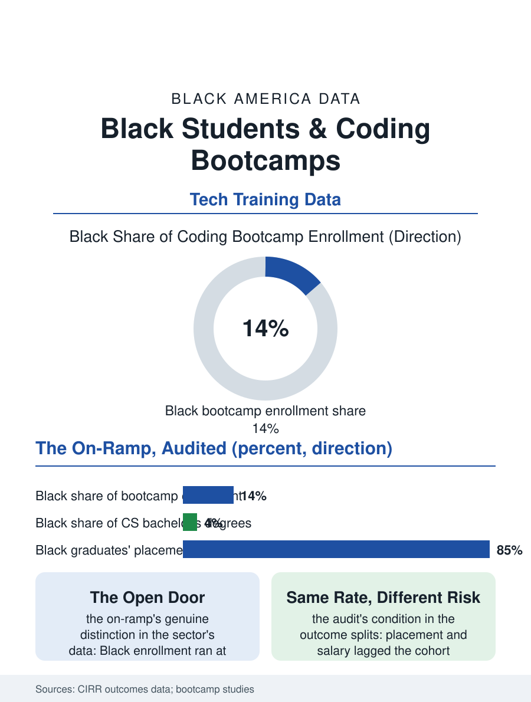

Black Education
The Shortcut, Audited: Black Students and Coding Bootcamps
Bootcamps enrolled Black students at population share and placed them behind the cohort, the shortcut's risks distributed by the wealth file. The bootcamp file.

The coding bootcamp promised to compress the computer science degree into six months and a job, and Black students enrolled in the promise at substantial rates, drawn by the tech industry's salaries and its stated hunger for diversity. The outcome data, assembled by the bootcamps' own reporting coalition and the researchers who audited it, tell a more conditional story about who the shortcut served. This article reads the bootcamp file.
The Promise and the Intake
The bootcamp model's economics shaped its intake from the start: tuition in the mid five figures for the immersive programs, financed by loans and the income share agreements that deferred the cost against the graduate's first salary, a financing structure whose risk sat with the student in proportion to the outcome's uncertainty. The diversity data the sector published on itself were genuinely distinctive: Black enrollment in the reporting bootcamps ran at or above the population share, several times the Black share of the computer science bachelor's pipeline, the bootcamp functioning for a decade as the tech workforce's most integrated on-ramp by headcount. The intake's composition matters to the outcome file: the bootcamp's Black students arrived, on the surveys, with lower prior earnings, less family wealth to underwrite the unpaid months, and higher reliance on the deferred financing, so that the same placement rate translated into different financial outcomes across the cohort, the graduate with the loan and no cushion experiencing the job search's sixth month differently from the classmate whose family carried it. The sector's contraction era, the closures and consolidations of the recent years, stranded cohorts mid-promise in the pattern of the for-profit college file's, the teach-out and the refund becoming the bootcamp student's vocabulary a decade after the pitch promised to disrupt exactly that history.
Placement, Audited
The outcome numbers require the audit the file insists on: the sector's self-reported placement rates counted the employed graduate generously, the reporting coalition's standards tightened over time under the researchers' pressure, and the disaggregated data, the rare prize, show the pattern the tech workforce file predicts: Black graduates placed at lower rates and at lower starting salaries than the cohort's average in the programs that published the splits, the gap composed of the network variable, the referral economy of the tech hiring file, and the prior-experience screen that converted the bootcamp's own credential into a junior filter beneath the degree the pitch claimed to replace. The employers' behavior completes the audit: the tech industry's diversity reports across the bootcamp decade show the Black share of the technical workforce moving by single points, the on-ramp's graduates absorbed at the junior tier and attriting at the promotion gates the workforce file documents, so that the bootcamp's contribution to the industry's composition was real but bounded by the industry's own retention arithmetic. The programs that post the strongest Black outcomes in the independent evaluations share the for-profit file's exception profile: employer-embedded, tuition borne by the hiring company or the public workforce system, wraparound support funded as part of the model, the apprenticeship hybrids that pay the student to learn being the design the evidence keeps selecting.
The Shortcut's Real Length
The bootcamp file closes with the sector's mature assessment, which its own alumni surveys support: the shortcut exists, it is real for the graduate whose finances can survive the search and whose network the program genuinely supplies, and its length is the full distance the traditional pipeline's students travel with more support, compressed into months the bootcamp student travels with less. The public workforce system's absorption of the model, the community college coding certificates and the registered tech apprenticeships that adopted the curriculum without the tuition, is the file's constructive trend, the pedagogy surviving the business model that pioneered it. The degree's defenders and the bootcamp's founders were both partly right in the data: the credential's signaling value persisted, and the skills were teachable at speed, and the students who paid for the lesson in the difference were, in the enrollment data, disproportionately the Black students the diversity pitch recruited hardest. The file's last entry is the consumer's rule the whole for-profit record teaches: in any school that sells speed, ask for the outcomes by race, in writing, with the denominators. The bootcamps that publish them exist. The file counts them, and so, increasingly, do the students.
More in Black Education
Black Educational Attainment: High School Parity, the College Gap
About 89 percent of Black adults hold a high school diploma and one in four holds a bachelor's degree or higher — the attainment ladder, the college completion gap, and the generational trend.
Historically Black Colleges and Universities: Enrollment and Degrees
More than 100 HBCUs enroll roughly 290,000 students and award about one in six Black bachelor's degrees — an outsized share from a small sector. The federal education data.
Black College Enrollment: 2.4 Million Students
About 2.4 million Black students are enrolled in American colleges — nearly two-thirds of them women. The NCES enrollment data by sector, level, and trend.
Source: Council on Integrity in Results and Reporting outcomes data; Course Report and independent bootcamp outcome studies.